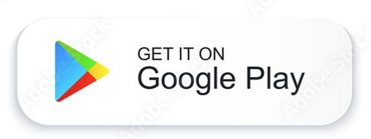
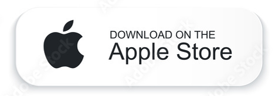

TikTok
O TikTok é um aplicativo para compartilhamento de vídeos curtos, de até 60 segundos, que está disponível para download gratuito em celulares Android e iPhone (iOS). O app oferece diversas ferramenta de edição e ganhou destaque em 2019, principalmente, entre os jovens, por causa das danças e desafios.
 